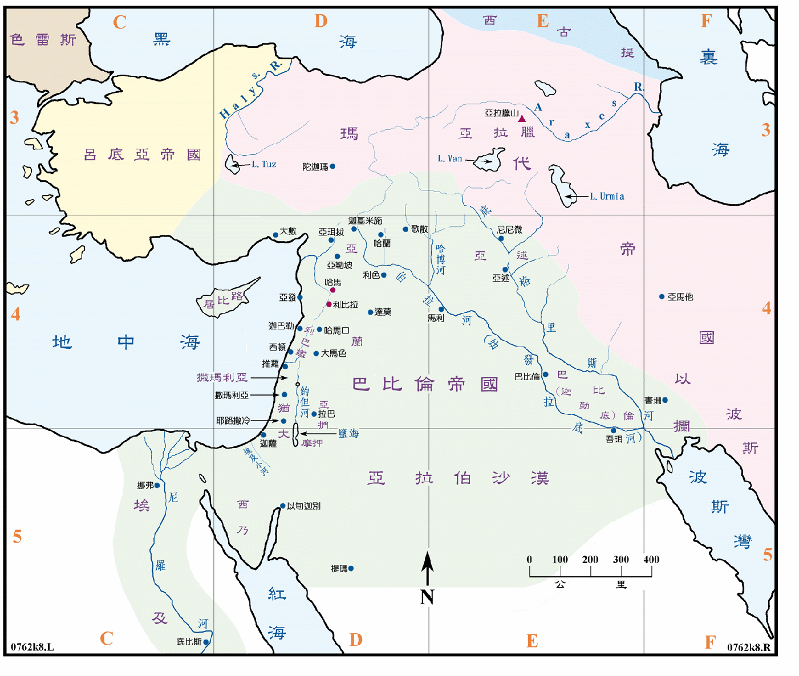

| 圣经 | 说明 |
|---|---|
| 王下20:14，代下32:31，赛39:1 | 犹大王希西家病愈后，巴比伦王巴拉但的儿子比罗达巴拉但就派使者送书信和礼物给他，希西家听从使者的话，就把他的财物和武备都给他看了，这件事使神离开他，试验他，好知道他心内如何。以赛亚预言说，这一些的财宝，到时都将被巴比伦掳去，不留下一样。 |
| 王下24:1，代下36:6 | 犹大王约雅敬年间巴比伦尼布甲尼撒上到犹大，约雅敬服事他三年，然后背叛他，耶和华使迦勒底军等攻击约雅敬，毁灭犹大。 |
| 王下24:7 | 巴比伦王将埃及王所管之地，从埃及小河直到伯拉河，都夺去了，埃及王不敢再从他的国中出来了。 |
| 王下24:10，代下36:10 | 犹大王约雅斤年间，巴比伦王尼布尼甲尼撒，上到耶路撒冷围困城，约雅斤等出城投降，巴比伦王将他和其亲属、大官、勇士、木匠、铁匠等共一千人、及王宫中的宝物，全掳去巴比伦。 |
| 王下25:1，代下33:18，耶52:4，结17:12 | 犹大王西底家背叛，巴比伦王尼布甲尼撒率领全军来攻击耶路撒冷，次年城破，西底家逃跑时被捉，在利比拉被剜了眼睛，用铜链锁着，再被带到巴比伦去。 |
| 王下25:8 | 巴比伦王尼布甲尼撒十九年，他的护卫长尼布撒拉旦，来到耶路撒冷烧了圣殿，拆毁四周的城墙，将人民和财物掳去巴比伦，又在利比拉巴比伦王那里，杀了大祭司等六十个人。 |
| 代上9:1 | 以色列人因犯罪就被掳到巴比伦。 |
| 代下33:11，结19:9 | 亚述王的将帅来攻击犹大王玛拿西，用铙钩钩住玛拿西，用铜 锁他，带到巴比伦去。 |
| 拉2:2，5:12 | 波斯王古列元年，下诏令从前被掳到巴比伦之犹大省的人，可以上耶路撒冷，并重建圣殿，又将放在自己神之庙中，从耶路撒冷掠来的财宝，全部还给犹大人，供重建圣殿之用。 |
| 拉6:1 | 於是大利乌王降旨，要寻察典籍库内，就是在巴比伦藏宝物之处，在玛代省，亚马他城的宫内寻得一卷，其中记着说，古列元年，他降旨论到耶路撒冷神的殿，要建造这殿为献祭之处。 |
| 拉7:9 | 波斯王亚达薛西王第七年，祭司以斯拉正月初一从巴比伦起程，五月初一就到了耶路撒冷。 |
| 诗137:1 | 他们曾在巴比伦的河边坐下，一追想锡安就哭了，……将要被毁灭的巴比伦城阿，报复你，像你待我们的，那人便为有福。 |
巴比伦帝国之发源地位於米所波大米的南部，即是示拿地和迦勒底地，自巴格达城之南约 60 公里起，直到波斯湾的两河之间之地，此处为一广大之冲积平原，土壤肥沃，因有两条大河之水常年供应，先民又开掘运河以利灌溉，故产物丰富，孕育了早期的文明，也一直是诸大帝国的发源地。
巴比伦帝国可分前后两期，前巴比伦是自 1894BC 到 1595BC，其国土原在示拿地，即是米所波大米的南部，后扩至米所波大米的北部和以拦等地，是当代雄霸天下的帝国。后巴比伦则是从 614BC 到 539BC，是由迦勒底人尼布卜拉撒创建，史称新巴比伦或迦勒底王朝，他藉玛代人之助，在 612BC 灭了亚述，取亚述全部的土地，其子尼布甲尼撒更伸张国土东到以拦，西及埃及和西亚。在 586BC 灭了犹大国，拆毁了耶路撒冷。但在 539BC 被波斯王国所灭。
在圣经中，迦勒底常与巴比伦同时出现，有的新版英文圣经就以巴比伦代替迦勒底，所以广义的讲，迦勒底就是巴比伦。